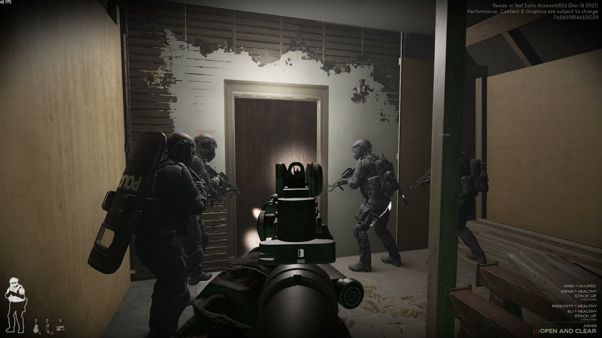

전술 FPS
약 54,800원
약 20~50시간
특수기동대(SWAT) 대원이 되어 다양한 범죄 현장에 투입되는 현실적인 전술 FPS 게임.플레이어는 인질 구출, 용의자 체포, 폭탄 위협 대응 등의 임무를 수행하며 무작정 사격하기보다 상황을 통제하고 규정에 따라 팀원들과의 협동,신중한 판단으로 행동해야 한다.
VOID Interactive
https://www.khgames.co.kr/news/articleView.html?idxno=222546
https://stg1994.tistory.com/m/922